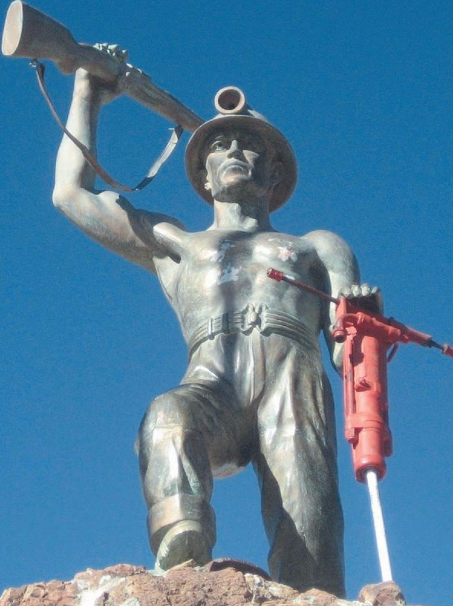

Potosí - Llallagua - Siglo XX
Monumento al Minero

📸 Imagen 1 (Monumento 3D): Elaboración propia / Registro 3D local. Fuente histórica: Víctor Montoya, "El Monumento al Minero tiene nombre y apellido". Semanario Aquí.
🎙️ Relato histórico y música ambiental:
🎵 Relato basado en la investigación de Víctor Montoya sobre Félix Trujillo Omonte y la Plaza del Minero.